Una historia de
datos, ciencia y formación
De las primeras actividades a la consolidación institucional.
Los hitos iniciales que dieron forma a la presencia de CIMAT en Monterrey.
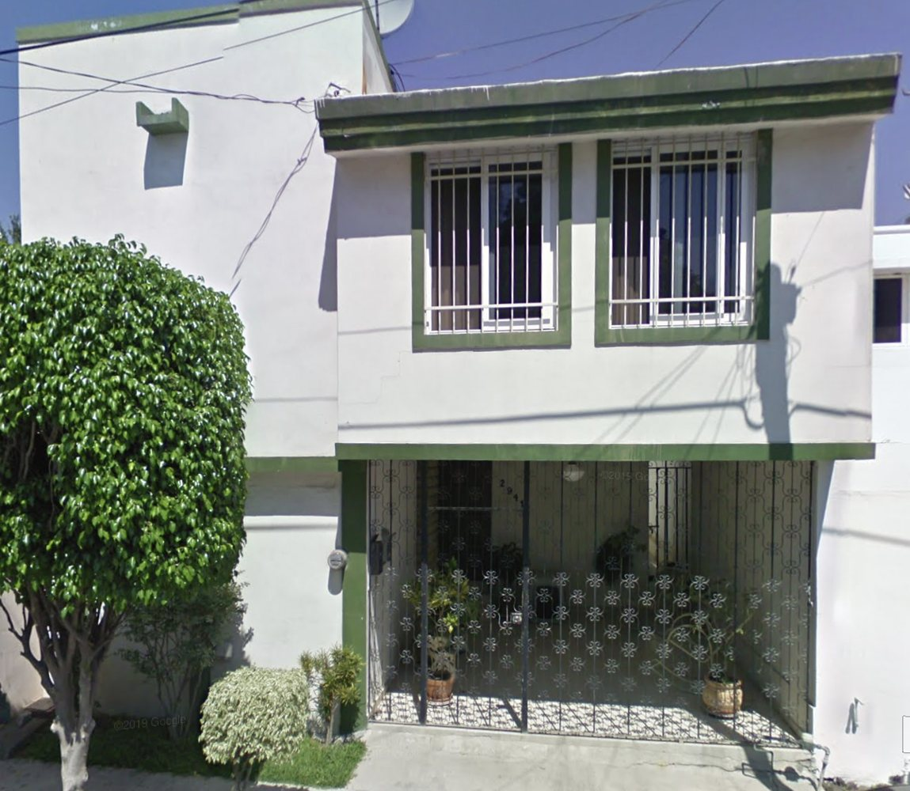
Inicio de actividades
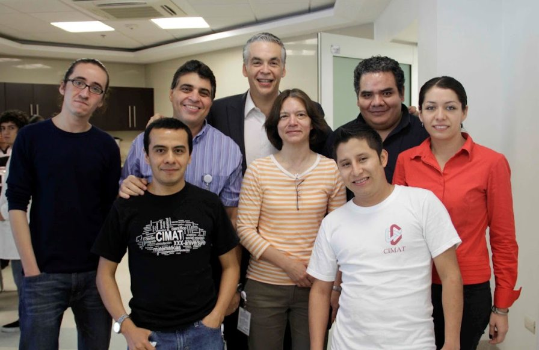
Abre como oficina de CIMAT
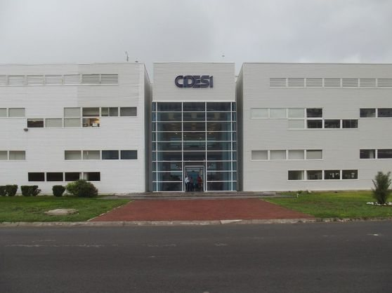
Referencia a CIDESI
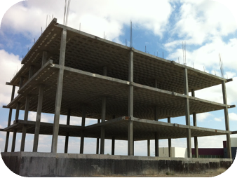
Se constituye legalmente como Unidad
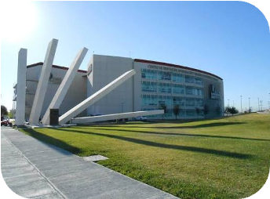
Referencia a CIIDIT
Una comunidad que crece y amplía su alcance.
La consolidación de las instalaciones y el desarrollo de programas académicos y de divulgación.
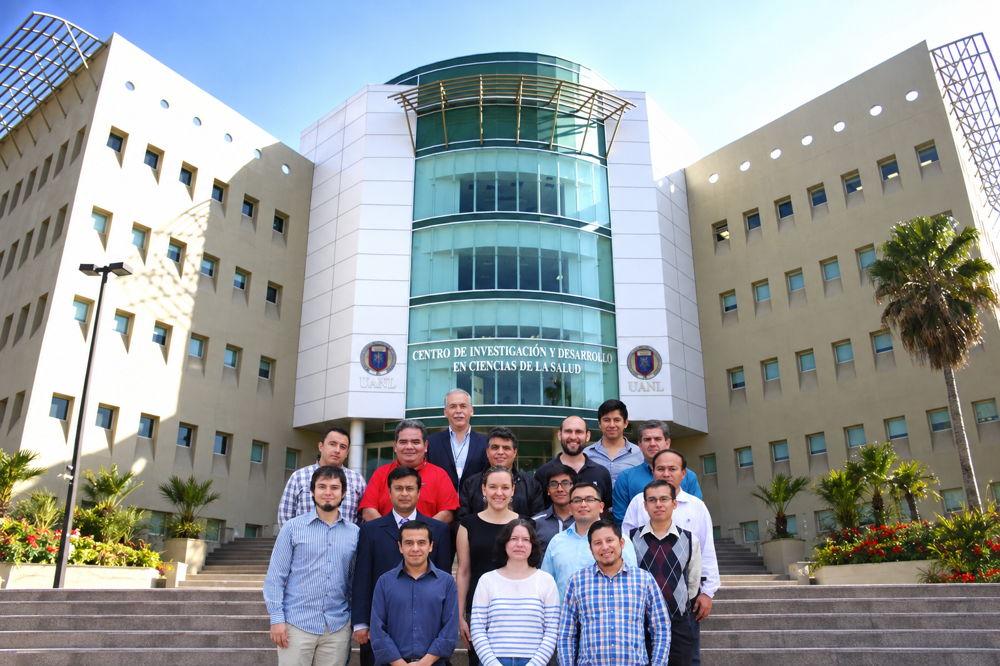
Etapa de colaboración con CIDICS
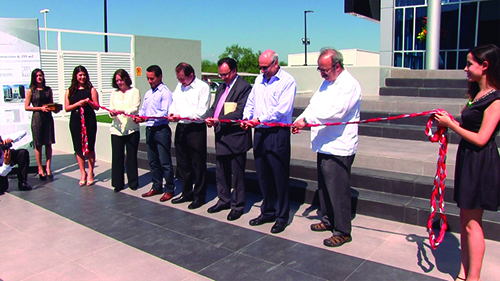
Inauguración de instalaciones en el PIIT
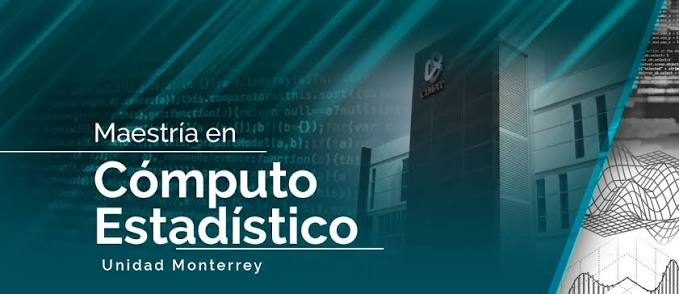
Inicia la MCE
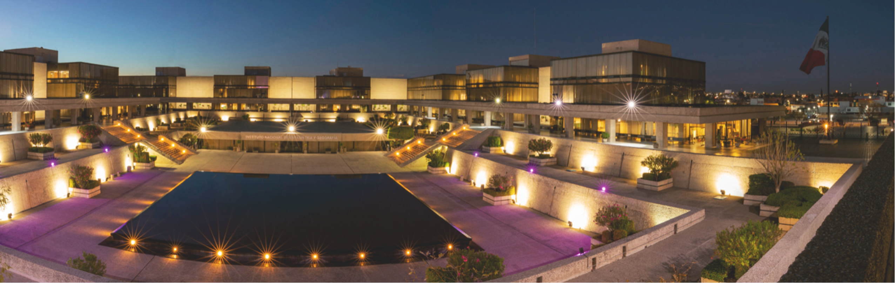
Inicia la MAEC CIMAT–INEGI
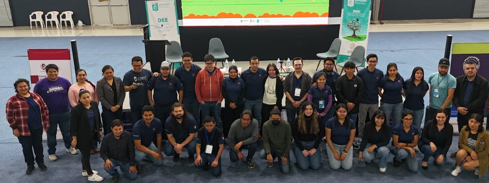
Grupo de divulgación Mate-canes
La MCE abre una nueva etapa.
En 2016 inicia la Maestría en Cómputo Estadístico en la Unidad Monterrey. El programa conecta estadística, cómputo científico y resolución de problemas mediante el análisis de datos.
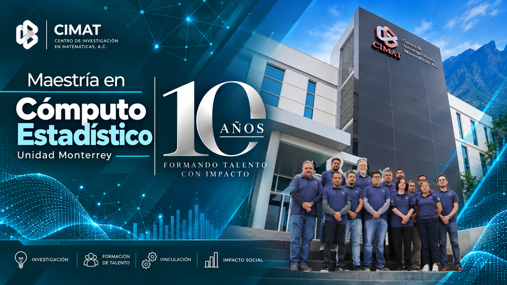
Las primeras generaciones.
Las fotografías reúnen parte de la historia de quienes han formado la comunidad MCE.
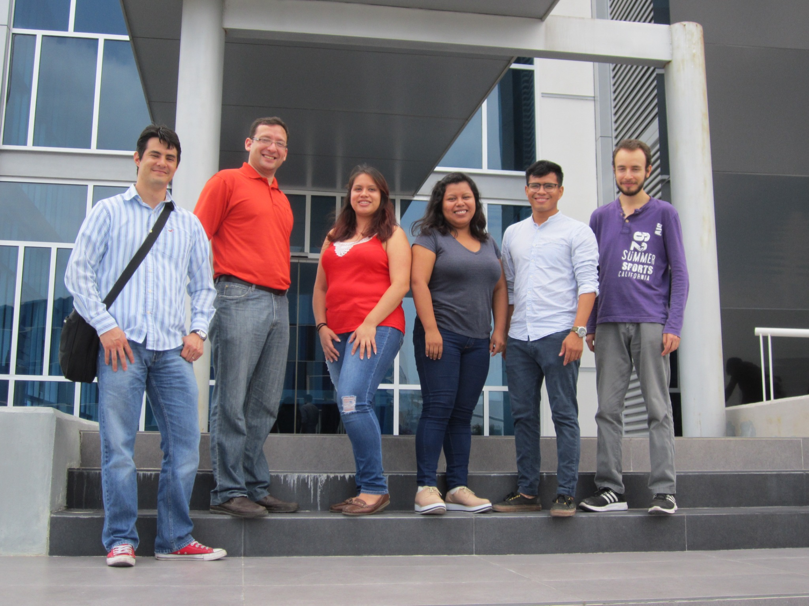
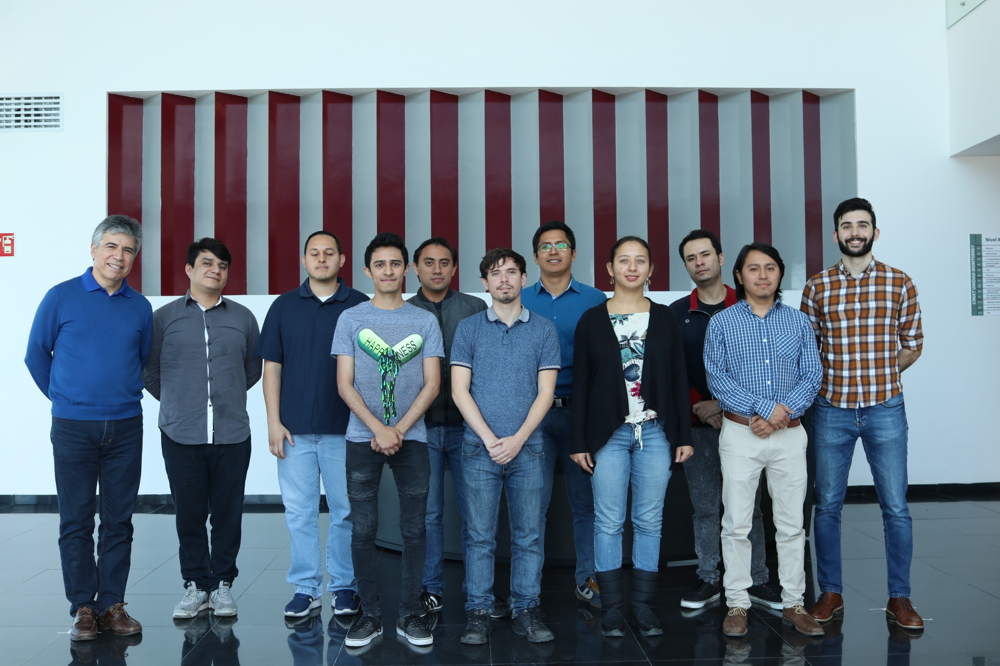
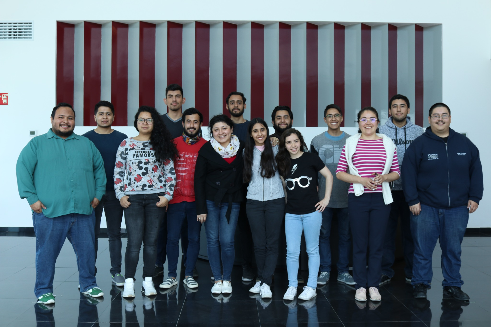
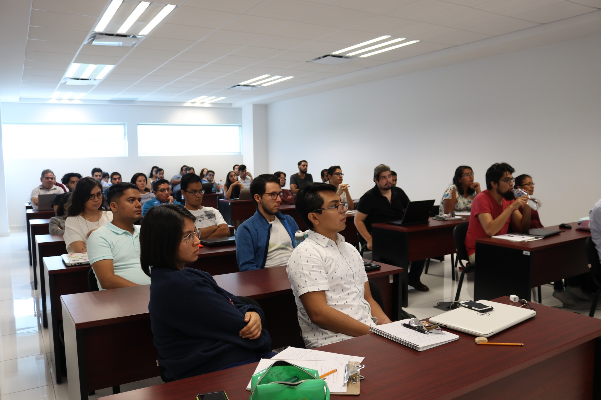
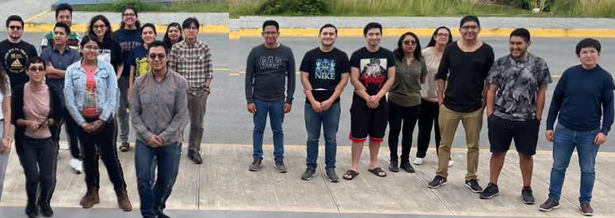
Una comunidad que sigue creciendo.
Las generaciones más recientes reflejan la continuidad del programa y el paso de nuevas cohortes por sus aulas.
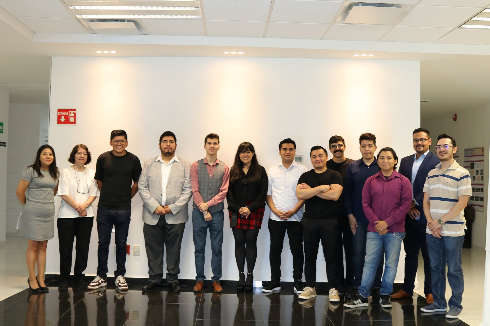
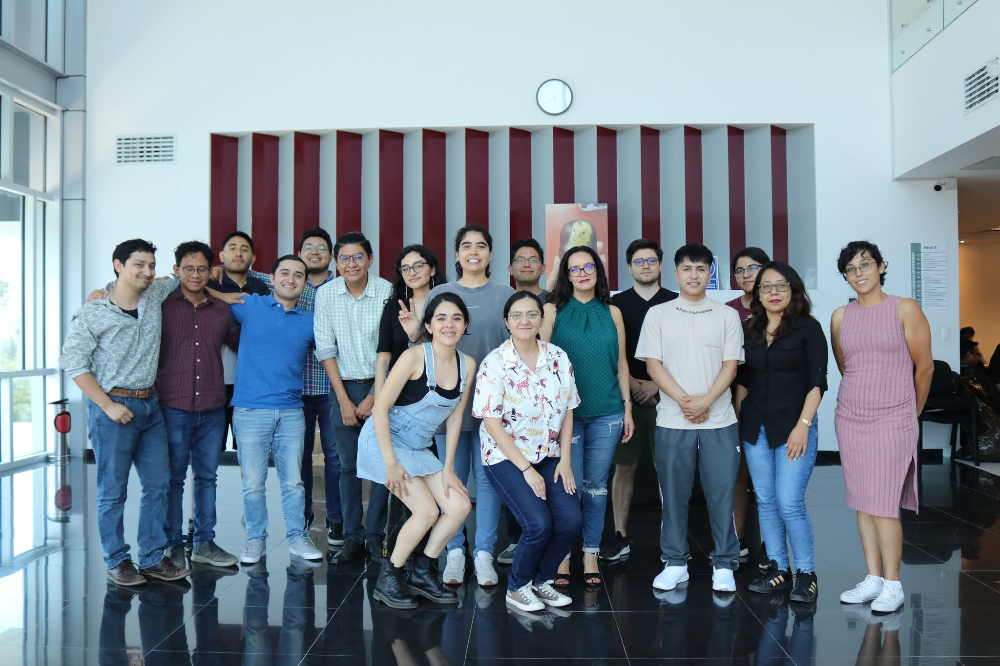
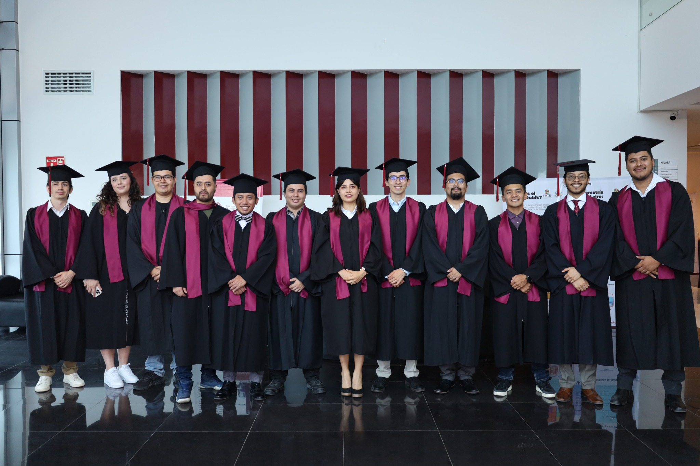
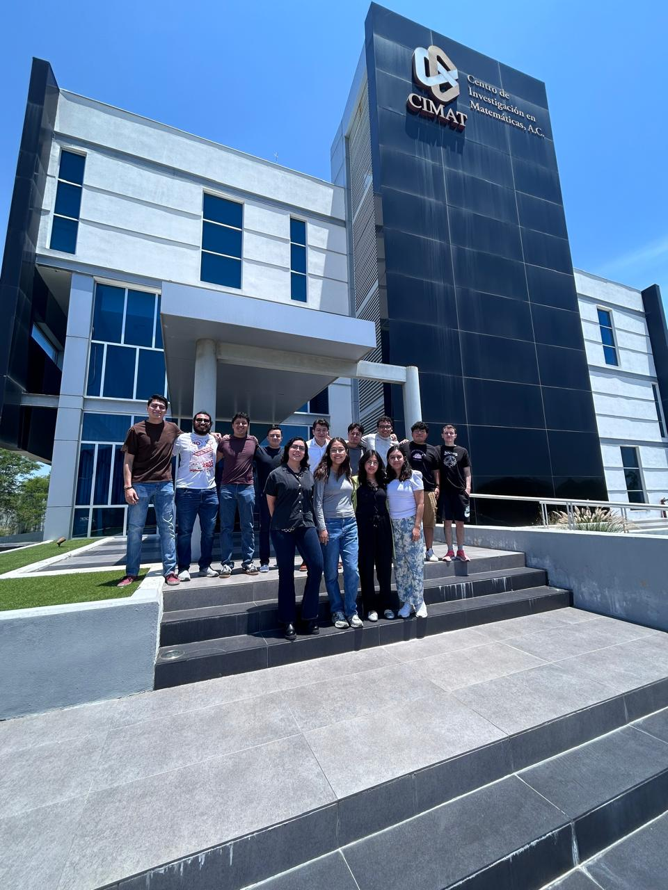
Fotografía pendiente
Fotografía pendiente
Formar para comprender problemas complejos.
El objetivo del programa es desarrollar habilidades para el manejo y análisis de datos de alta complejidad mediante herramientas estadísticas y de cómputo científico.
- Identificar, mejorar y aplicar metodologías modernas de ciencia de datos.
- Desarrollar metodologías para resolver problemas técnicos y científicos.
- Generar y transmitir conocimiento al sector público y privado.
Más que solo enseñar conocimientos, formamos personas capaces de aprender y colaborar en la solución de problemas reales.
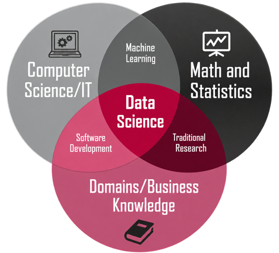
Conocimiento que se conecta con el entorno.
Investigación
Publicaciones y trabajos derivados de tesis y de las líneas de investigación del programa.
Vinculación
Estancias en organizaciones e instituciones como INEGI, Banxico, Heineken México, OXXO y Schneider Electric, entre otras.
Trayectorias
Formación para analizar información, desarrollar modelos y resolver problemas en contextos de ciencia de datos.
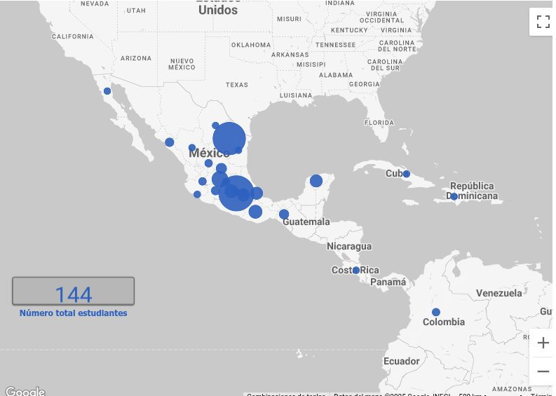
Diez años construyendo capacidades.
El siguiente capítulo continúa.
Desde 2016, la MCE forma parte de la evolución de CIMAT Unidad Monterrey: una historia de formación, investigación y colaboración que se construye generación tras generación.